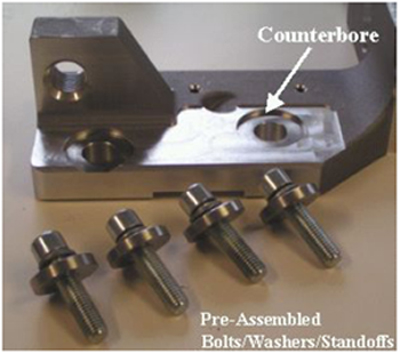

| NOTE: | POTENTIAL FOR PATIENT INJURY. X-RAY TUBE IS ON ROTATING ASSEMBLY. SELECT PROPER BOLT KIT FROM TUBE CRATE, BASED ON SYSTEM TYPE. NEVER MIX THE MOUNTING HARDWARE TYPES. |
| NOTE: | EJECTION HAZARD. TUBE MAY EJECT IF IMPROPER MOUNTING HARDWARE COMBINATION USED. READ THE FOLLOWING INSTALLATION INSTRUCTIONS CAREFULLY TO ENSURE THAT THE PROPER MOUNTING HARDWARE IS USED. |
Illustration 7: Pre-assembled Bolt / Lock Washer / Standoff
